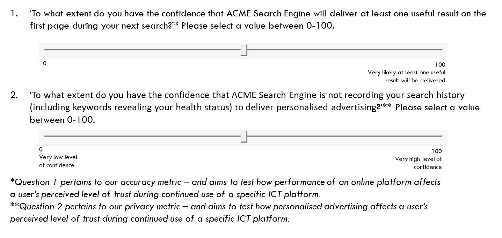

B) Part one: The interactive ACME search engine exercise (continued)
Advertising
On delivering the search results, the fictional ACME Search Engine also displays a featured advertisement.
This advertisement may be irrelevant or directly related to a current or previous keyword search.
The trials and questions
During each trial, you will be asked the two following questions, as in the following figure:
